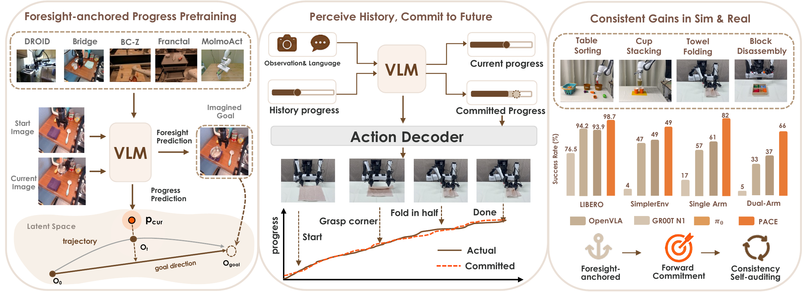
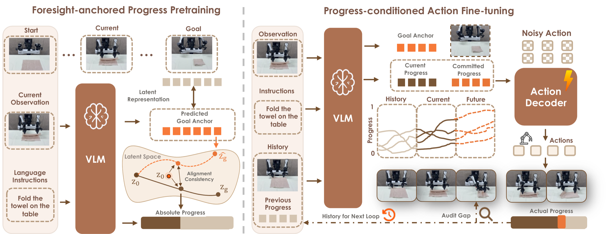
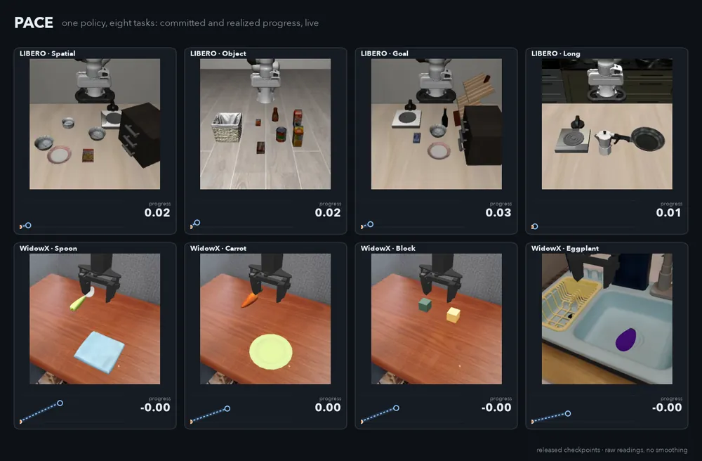

Progress Actively-internalized Conditioning Execution for Long-horizon Manipulation
Reads its progress. From the image and the instruction alone, the policy states how far the task has come.
Commits to the next step. Before each action chunk it states how much that chunk should advance the task, and acts on it.
Checks itself. A frozen encoder measures what the chunk delivered; unmet commitments add up to a failure alarm.
Released checkpoints, raw readings with no smoothing. Before each chunk the policy commits to how far it will advance: blue, dashed until the chunk has run, then part of the committed line. Orange is the realized progress (anchored progress, measured with the frozen encoder). At every check the gap between the two (red: unmet, green: exceeded) drops into the meter of unmet commitments, which is the failure alarm. The window above the curve zooms in on the latest chunks.

PACE turns task progress into something the policy predicts, commits to and conditions on, all within one forward pass of a Qwen3-VL-4B backbone with a flow-matching action head.

| Spatial | 99.0 |
| Object | 99.8 |
| Goal | 99.4 |
| Long | 96.2 |
| Average | 98.6 |
Success rate (%) of the released LIBERO checkpoint with the evaluation scripts in the repository: 10 tasks × 50 trials per suite, seed 7.

Every chunk is a promise the frozen encoder can check. The alarm adds up the progress the policy promised but did not deliver, and watches for progress that stops rising. It needs no extra model and no failure labels.
@inproceedings{ni2026pace,
title = {{PACE}: Progress Actively-internalized Conditioning Execution for Long-horizon Manipulation},
author = {Ni, Fei and Chen, Zhuo and Yao, Xianze and Chen, Zerui and Chen, Changrui and Yuan, Yifu and Luo, Shan and Hao, Jianye and Deng, Jiankang},
booktitle = {Advances in Neural Information Processing Systems (NeurIPS)},
year = {2026}
}